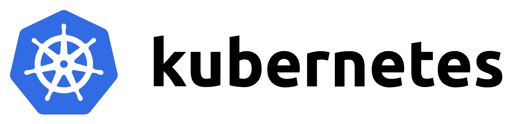

В этой подборке мы собрали для вас полезные команды kubectl, которые помогут вам работать с кластером k8s в разы эффективнее. Мы не просто перечислим команды, но и разберём их применение, а также дадим полезные советы, чтобы вы могли использовать kubectl на полную мощность.
Перезапуск Deployment без простоя — запускает контролируемый перезапуск всех Pod, управляемых Deployment, без прерывания работы сервиса.
kubectl rollout restart deployment <deployment-name> -n <namespace>
Команда инициирует rolling update для указанных Deployment в указанном namespace. Kubernetes по очереди пересоздаст Podы, используя текущий шаблон (образ, переменные окружения и т.д.), что позволяет обновить или перезапустить контейнеры без простоев сервиса. Полезно при необходимости перезагрузить приложение (например, после обновления конфигурации ConfigMap/Secret) либо при зависании Pod’ов.
Дополнительные советы:
Эта команда доступна с Kubernetes v1.15+ и поддерживает DaemonSet и StatefulSet. Под капотом kubectl добавляет специальную аннотацию в шаблон Pod (например, kubectl.kubernetes.io/restartedAt), заставляя Deployment заново пересоздать Podы. Убедитесь, что у Deployment включён стратегия RollingUpdate (обычно доступна по умолчанию), чтобы перезапуск происходил плавно.
Интерактивный доступ в контейнер (exec) — позволяет выполнить команду или попасть в shell внутри запущенного контейнера Pod’а для отладки.
kubectl exec -it <pod_name> -- /bin/sh
Открывает терминал внутри контейнера указанного Pod. Это применяется для диагностики работающего приложения: можно проверить файлы конфигурации, выполнить утилиты (например, curl для проверки сетевого доступа, env для просмотра переменных окружения) или запустить shell для ручного исследования состояния контейнера. Особенно полезно, когда контейнер работает, но требуется проверить его изнутри.
Если Pod содержит несколько контейнеров, добавьте параметр c
Дополнительные советы:
Для отладки сетевого трафика между подами можно использовать
kubectl exec -it <pod-name> -- tcpdump -i eth0 -nn -s 0 -w /tmp/capture.pcap
kubectl cp <pod-name>:/tmp/capture.pcap ./capture.pcap
Для быстрого подключение к поду без точного узнания его имени
kubectl exec -it $(kubectl get pods -o=jsonpath='{.items[0].metadata.name}') -- /bin/sh
Используйте kubectl exec
Учтите, что у контейнера должен быть доступен shell-интерпретатор (например, /bin/sh или /bin/bash). В минималистичных образах без shell (distroless) этот приём не сработает — в таких случаях пригодится эфемерный контейнер отладки.
Мониторинг использования ресурсов (top) — отображает потребление CPU и памяти у Podов или узлов в реальном времени.
kubectl top pod [--all-namespaces]
Выводит текущие метрики потребления ресурсов. Без флага -all-namespaces показывает Pods только в Default namespace, с флагом -n
Дополнительные советы:
Для работы команд kubectl top требуется установленный Metrics Server в кластере – убедитесь, что он развернут. Команда поддерживает параметры фильтрации, например -use-protocol-buffers для более быстрого вывода. Также можно указать -containers, чтобы увидеть разбивку потребления по контейнерам внутри Pod.
Подробное описание объекта (describe) — выводит детальную информацию о ресурсе Kubernetes, включая его спецификацию и недавние события. Особенно полезно использовать, когда необходимо узнать причину, почему под застрял в Pending или CrashLoopBackOff.
kubectl describe pod <pod_name> -n <namespace>
Предоставляет полный обзор указанного объекта (Pod, Deployment, Node и т.д.). Например, для Pod покажет его статус, события (Events), причины перезапуска контейнеров, ошибки при монтировании томов и пр.
Это первая остановка при отладке проблем: события в конце вывода часто указывают на причину сбоя
Дополнительные советы:
Используйте describe для любых ресурсов:
kubectl describe node <node_name>
покажет состояние узла и какие Podы на нём работают, kubectl describe deployment
Если нужно отследить изменение какого-либо поля, можно сравнить вывод describe до и после применения изменений. Имейте в виду, что kubectl describe выводит только текущие данные, он не показывает историю изменений — для истории Deployment лучше использовать
kubectl rollout history.
Список всех типов ресурсов API — отображает доступные в кластере ресурсы и их версии API.
kubectl api-resources
Полезно, когда нужно узнать точные имена ресурсов, поддерживаемые API вашего кластера, включая наименования kind, короткие алиасы и группу API.
Вывод поможет определить, например, что deployments принадлежат группе apps и имеют shortname deploy, или увидеть доступные Custom Resource Definitions (CRD). Опытным пользователям это позволяет корректно формировать запросы kubectl get/describe и понимать, какие ресурсы кластер поддерживает (особенно актуально, если у вас несколько версий Kubernetes или подключены операторы с кастомными ресурсами).
Дополнительные советы:
Флаг -namespaced=true/false отфильтрует ресурсы по уровню (namespaced или кластерные). С помощью kubectl api-resources -o wide можно увидеть дополнительную информацию, например, групповые версии и возможные вербы (get, list, create и т.д.) для каждого ресурса. Команда kubectl api-versions дополняет картину, выводя все поддерживаемые версии API-групп.
Запуск временного отладочного Pod — быстро создает одноразовый Pod для диагностики внутри кластера.
kubectl run debug-pod --rm -it --image=busybox -- /bin/sh
Запускает Pod с указанным образом (в данном случае busybox) и открывает интерактивный shell внутри него. Флаг -rm автоматически удалит Pod после завершения работы shell. Такой Pod пригодится, чтобы выполнить отладочные команды в среде кластера: проверить доступность сервисов по сети (ping, wget), DNS (nslookup), просмотреть содержимое томов или конфигов, когда прямой доступ к существующим Pod ограничен.
Это особенно полезно на стейджинг- или продакшн-кластерах, где нет отдельного интерактивного контейнера для отладки.
Дополнительные советы:
Образ busybox используется из-за своего небольшого размера и наличия базовых утилит. При необходимости можно указать другой образ (например, с расширенными средствами диагностики). Команда kubectl run ... в современных версиях Kubernetes ограничена созданием Pod (Deployment по умолчанию не создается без флага -restart). После отладки убедитесь, что Pod удалён (-rm позаботится об этом автоматически, если вы вышли из shell).
Просмотр логов в реальном времени — предоставляет поток журналов приложения из контейнера.
kubectl logs -f <pod_name> [-c <container_name>]
Показывает логи указанного Pod. По умолчанию выводится лог стандартного вывода основного контейнера. Флаг -f позволяет “подписаться” на поток логов и видеть новые записи в реальном времени, что удобно для слежения за работающим сервисом или воспроизведения проблемы.
Если в Pod несколько контейнеров, параметр -c указывает, чьи логи нужны. Используйте эту команду для оперативного анализа поведения приложения, поиска stacktrace ошибок, проверки запуска приложения, для очередного осознания, что баги появляются быстрее, чем вы успеваете их фиксить. Дополнительные советы: Флаг -previous покажет логи предыдущего экземпляра контейнера, если он перезапускался (полезно при отладке CrashLoopBackOff ситуаций). Также можно ограничивать объём выводимых логов: например, -tail=100 выведет только последние 100 строк, а -since=1h — записи за последний час. Для группового сбора логов можно использовать селектор: kubectl logs -l app=myapp выведет логи всех Pod с меткой app=myapp (однако при множественных контейнерах в Pod всё равно нужен c или -all-containers).
Локальный порт-форвардинг (port-forward) — пробрасывает порт с вашего локального компьютера на порт внутри кластера (Pod или Service).
kubectl port-forward <resource_name> 8080:80 -n <namespace>
kubectl port-forward svc/<service-name> 8080:80 -n <namespace>
Устанавливает туннель от вашей машины к выбранному Pod или сервису.
Например,
kubectl port-forward pod/myapp-5d9f7dbc4f-xcj8p 8080:80
откроет доступ по адресу http://localhost:8080 к сервису, работающему на порту 80 внутри контейнера.
Это часто используется для отладки или временного доступа к приложению, запущенному в кластере, без настройки Ingress или NodePort.
Команда работает в foreground-режиме, выводя в консоль подключения/разрывы, и завершает работу по Ctrl+C.
Дополнительные советы:
Можно пробросить сразу несколько портов, указав их через пробел, например:
```Shell
kubectl port-forward svc/myservice 8080:80 8443:443.
Ресурсом может быть Pod (тогда порт пробрасывается к этому конкретному экземпляру) или Service (тогда трафик распределяется по бэкендам сервиса). Учтите, что port-forward предназначен для локального использования и отладки; для постоянного внешнего доступа лучше настроить соответствующие сервисы или Ingress.
Копирование файлов из/в контейнер (cp) — позволяет скачивать файлы из Pod или загружать их внутрь.
kubectl cp <pod_name>:/path/inside/container /local/path
Утилита копирует файлы между вашим локальным окружением и файловой системой контейнера в Pod. Работает аналогично scp: можно указывать источник и назначение как локальный путь или в формате pod_name:/path.
Например, командой
kubectl cp mypod:/var/log/app.log ./
вы можете вытащить лог-файл приложения из контейнера на свою машину для анализа. Обратное копирование позволяет, например, доставить в контейнер скрипт или конфигурацию для отладки, если по каким-то причинам это безопаснее/удобнее, чем перестраивать образ.
Дополнительные советы:
Обратите внимание, kubectl cp фактически архивирует файлы через tar под капотом. Поэтому в контейнере должен быть доступен /bin/tar. Большинство базовых образов Linux имеют tar, но в очень минималистичных (например, scratch/distroless) этой утилиты нет – тогда копирование напрямую не получится.
В таких случаях можно копировать через kubectl exec: например,
kubectl exec <pod> -- cat /path/file > file.
Если нужно скопировать директорию, убедитесь, что добавили флаг -r (recursive) в команду.
Вывод узла в обслуживание (Cordon/Drain) — позволяет безопасно освободить узел от запущенных Pod для техобслуживания или обновления.
kubectl drain <node_name> --ignore-daemonsets --delete-emptydir-data
Команда drain плавно выселяет все управляемые Pod’ы с указанного узла. Kubernetes перенесёт реплику Pod’ов на другие узлы согласно настройкам контроллеров (Deployment, ReplicaSet и т.д.), гарантируя, что запланированные реплики продолжат работу. Флаги -ignore-daemonsets и -delete-emptydir-data обычно используются, чтобы пропустить DaemonSet-поды (их вручную не выселяют) и удалить данные EmptyDir томов, так как они привязаны к узлу.
Перед drain обычно выполняют cordon: kubectl cordon
Дополнительные советы:
Применяйте cordon/drain перед выводом узла из кластера, обновлением ОС, патчами ядра или другими работами, требующими перезагрузки узла.
После завершения обслуживания верните узел в кластер командой kubectl uncordon
Установка taint на узел — маркирует узел «таинтом», чтобы ограничить размещение на нём Pod’ов без специального допуска.
kubectl taint nodes <node_name> <key>=<value>:NoSchedule
Добавляет к указанному узлу taint с ключом и значением. В примере узлу присваивается taint key=value с эффектом NoSchedule, что запрещает планировщику помещать на него новые Podы, не имеющие соответствующей toleration. Этот приём используется, чтобы зарезервировать узел под определённые задачи или классы приложений. Например, можно пометить группу узлов как dedicated=database:NoSchedule и добавить toleration в манифесты только тех Pod, которые являются базами данных. Таким образом другие приложения не попадут на эти узлы.
Дополнительные советы:
Помимо NoSchedule существуют эффекты NoExecute (не только не запускать новые, но и выселить текущие несовместимые Pod’ы) и PreferNoSchedule (мягкая версия NoSchedule: желательно избегать, но можно размещать, если других вариантов нет). Для удаления taint используйте команду с суффиксом :
kubectl taint nodes <node_name> <key>:NoSchedule
- (это снимет taint с ключом ). Управление taint’ами и toleration позволяет тонко настраивать размещение — убедитесь, что критичные системные Pod’ы (типа kube-proxy, CoreDNS) имеют toleration ко всем применяемым taint, иначе вы рискуете «выселить» системные сервисы с узлов.
Проверка прав доступа (RBAC can-i) — быстро выясняет, имеет ли текущий аккаунт (или указанный) право выполнять определённое действие в кластере.
kubectl auth can-i <verb> <resource> [--namespace <ns>]
Команда ответит yes или no на вопрос, можно ли заданному пользователю/роли совершить указанное действие над ресурсом. Например, kubectl auth can-i delete pods -n dev проверит, разрешено ли удалять Pod’ы в namespace dev с вашими текущими учетными данными. Это полезно для отладки проблем с RBAC – вместо попыток выполнить действие и получать «Forbidden», вы явно узнаёте, есть доступ или нет. Также можно проверить чужие права, указав флаг -as=
Дополнительные советы:
Используйте флаг -list чтобы увидеть перечень всех действий, разрешённых текущему пользователю в указанном namespace.
Это помогает получить сводное представление о правах, особенно для сервис-аккаунтов. Имейте в виду, что kubectl auth can-i оперирует только правами API Kubernetes (запросы чтения/записи ресурсов). Если используются дополнительные механизмы авторизации (например, OPA Gatekeeper или авторизация на уровне приложений), их результаты команда не отразит.
Эфемерный контейнер для отладки Pod — добавляет временный контейнер в уже запущенный Pod для диагностирования проблемы.
kubectl debug -it <pod_name> -c debugger --image=busybox --target=<целевой_контейнер>
Эта команда запускает внутри существующего Pod’а дополнительный контейнер (ephemeral container) с образом, содержащим отладочные инструменты, и сразу подключается к нему в интерактивном режиме. Ключ -target указывает, с каким существующим контейнером ассоциировать отладочный (например, чтобы разделить PID namespace и видеть процессы целевого контейнера). Эфемерный контейнер полезен, когда обычный exec не помогает — например, если основной контейнер упал и постоянно перезапускается, либо в образе отсутствуют необходимые утилиты. Отладочный контейнер разделяет сеть и тому подобное с Pod, поэтому можно исследовать файловую систему томов, сетевые подключения, переменные окружения основного приложения и пр. Дополнительные советы: Эфемерные контейнеры не предназначены для постоянной работы: они не перезапускаются при завершении и не сохраняются в спецификации Pod (после удаления Pod исчезнут и все эфемерные контейнеры). Для их использования может потребоваться включить соответствующий Feature Gate на старых версиях кластера. В некоторых случаях вместо -target применяют флаг -copy-to (создание копии Pod с отладочным контейнером), если требуется изолированно исследовать окружение. Помните, что отладочный контейнер имеет доступ к файловой системе и сети Pod, но может не видеть процессы других контейнеров, если не включён shareProcessNamespace для Pod (ограничение безопасности). В целом, kubectl debug — мощный инструмент для live-отладки сложных проблем непосредственно в кластерном окружении.
Применение конфигурации с Kustomize — позволяет коллекцию YAML-манифестов с вариациями (overlays) без ручного слияния файлов.
kubectl apply -k <директория>
Kubernetes поддерживает встроенную интеграцию с Kustomize — инструментом, который накладывает патчи и объединяет базовые манифесты с учетом окружения. Данная команда ищет в указанной директории файл kustomization.yaml и применяет все указанные в нём ресурсы с заданными изменениями (например, разные параметры для dev/prod). Это облегчает управление конфигурациями: вместо множества почти одинаковых YAML-файлов вы храните базовый вариант и патчи для различных окружений, а kubectl apply -k собирает и применяет их к кластеру.
Дополнительные советы:
Убедитесь, что используете kubectl версии 1.14 или выше – начиная с этой версии Kustomize встроен в клиент. В kustomization.yaml можно определять namespace по умолчанию, общие метки/аннотации, генераторы ConfigMap/Secret и прочие трансформации. Если нужно просто увидеть результирующий YAML, используйте kubectl kustomize
Обновление образа в Deployment на лету — меняет образ контейнера в запущенном Deployment без редактирования YAML вручную.
kubectl set image deployment/<имя> <контейнер>=<новый_образ:tag>
При помощи этой команды можно быстро развернуть новую версию приложения. Kubernetes выполнит плавное обновление: запустит новые Pod’ы с указанным образом и выключит старые согласно стратегии деплоя. Например,
kubectl set image deployment/frontend webapp=image:v2
обновит для Deployment frontend образ контейнера webapp до версии image:v2. Это эквивалентно изменению поля image в манифесте и применению его, но удобнее и быстрее, особенно в экстренных случаях.
Дополнительные советы:
Убедитесь, что указываете правильные имена контейнеров внутри Pod (если их несколько). Прогресс развёртывания можно отследить командой
kubectl rollout status deployment/<имя>.
Если что-то пошло не так, всегда можно откатиться на предыдущую версию (см. следующий пункт). Команда set image также работает для DaemonSet, StatefulSet и даже отдельных контейнеров Job, если потребуется заменить образ на лету.
Откат Deployment на предыдущую версию — быстро возвращает приложение к предыдущей рабочей версии (ревизии) Deployment.
kubectl rollout undo deployment/<имя_deployment>
Если новая версия приложения оказалась неработоспособной или с ошибками, эта команда позволит вернуться к предыдущей конфигурации, хранящейся в истории Deployment. Kubernetes уберёт текущие Podы и развернёт те, что соответствуют предыдущей ревизии. По умолчанию откатывается на последнюю успешную версию, но можно указать конкретную ревизию флагом -to-revision=
Дополнительные советы:
Перед откатом полезно просмотреть историю версий:
kubectl rollout history deployment/<имя>
покажет список ревизий и описание изменений, что поможет выбрать нужную точку для отката. Убедитесь, что причина проблемы действительно в новом деплое — например, если проблема связана с внешними системами, откат не поможет. После выполнения команды undo стоит мониторить статус деплоя (kubectl rollout status) и логи приложения, чтобы убедиться, что откат прошёл успешно и сервис восстановился.
Масштабирование приложений (scale) — изменение числа реплик Podов для Deployment/ReplicaSet/StatefulSet в ручном режиме.
kubectl scale deployment/<имя> --replicas=<N>
Явно устанавливает количество реплик для ресурса контроллера. Например, можно оперативно увеличить число Podов веб-приложения при росте нагрузки (-replicas=10) или уменьшить при снижении (-replicas=2). Kubernetes создаст или остановит нужное количество экземпляров, плавно перераспределяя нагрузку. Эта команда работает с Deployment, ReplicaSet, ReplicationController, StatefulSet и другими масштабируемыми ресурсами.
Дополнительные советы:
Масштабирование через kubectl полезно при тестировании авто-масштабирования или в случае отключения Horizontal Pod Autoscaler, а также для ручного контролируемого изменения нагрузки. Можно масштабировать сразу несколько ресурсов одной командой, перечислив их через пробел или указав общий label selector. Например:
kubectl scale deploy/frontend deploy/backend --replicas=5
масштабирует оба Deployment. Также доступна защита от случайного масштабирования: флаг -current-replicas позволит выполнить команду только если текущее число реплик совпадает с ожидаемым (предотвращает условия гонки, когда кто-то еще изменил масштаб).
Переключение контекста kubectl — быстрое переключение между кластерами и учетными записями в конфигурации kubectl.
kubectl config use-context <context_name>
Контекст kubectl определяет, к какому кластеру и под каким пользователем (учётными данными) выполняются команды, а также namespace по умолчанию. use-context переключает текущий контекст на указанный context_name, который должен быть предварительно настроен в kubeconfig. Этот приём крайне удобен, когда вы работаете с несколькими кластерами (например, dev/stage/prod) или от разных ролей — вместо постоянного указания -cluster/-user/-namespace в командах достаточно переключить контекст. Дополнительные советы: Список доступных контекстов можно увидеть командой kubectl config get-contexts — он покажет именованные контексты и текущий активный. Чтобы добавить новые контексты, обычно объединяют kubeconfig-файлы (например, KUBECONFIG=dev.kubeconfig:prod.kubeconfig kubectl config view --merge --flatten > merged.kubeconfig). Вы также можете временно переопределить контекст без изменения глобального kubeconfig, задав переменную окружения KUBECONFIG или флаг -context для разовой команды. Структурируйте контексты с понятными именами (включая имя кластера и окружения), чтобы снизить риск перепутать их при выполнении команд.
Изучение схемы ресурса (explain) — вывод справочной информации о полях и вложенных объектах в Kubernetes API.
kubectl explain
Объяснение: Показывает документацию по указанному ресурсу или полю.
Например,
kubectl explain deployment.spec
отобразит описание всех полей спецификации Deployment. А команда
kubectl explain pod.spec.containers расскажет о поле containers в спецификации Pod (тип, описание, под-поля). Это позволяет быстро понять, какие свойства поддерживаются, какие значения ожидаются и что означает каждое поле, без открытия документации в браузере. Опытные инженеры используют kubectl explain, чтобы уточнить, как задать ту или иную настройку прямо из терминала. Дополнительные советы: Добавьте флаг -recursive, чтобы сразу получить полный список всех вложенных полей (внимание: вывода может быть очень много). kubectl explain берёт информацию из swagger-документации API сервера, поэтому показывает актуальные сведения именно для версии вашего кластера. Если вы работаете с CRD (Custom Resource), kubectl explain будет работать, только если разработчики CRD добавили схему (openAPI schema) в определение ресурса. В противном случае для таких ресурсов информация может быть неполной или отсутствовать.
Частичное обновление ресурса (patch) — позволяет изменить отдельные поля ресурса без повторного применения всего манифеста.
kubectl patch
Это удобно для быстрых изменений: например, можно одним запросом добавить аннотацию к Deployment или обновить поле образа, не редактируя YAML вручную. Патч применяется мгновенно к существующему объекту. В отличие от kubectl apply, тут не нужен исходный файл с полной конфигурацией — достаточно передать фрагмент в формате JSON.
Дополнительные советы:
По умолчанию используется strategic merge patch для встроенных типов Kubernetes – он умно сливает структуры (например, сливает списки контейнеров по именам). Можно явно указать тип патча: -type=merge для обычного merge-patch или -type=json для JSON Patch (RFC 6902 операции).
Последний позволяет выполнять такие операции, как удаление поля (операция remove) или замена в массиве по индексу. Будьте осторожны с форматом кавычек и экранирования при передаче JSON в shell (удобно использовать одинарные кавычки снаружи). При сложных изменениях, затрагивающих много полей, предпочтительнее обновить манифест и выполнить apply для лучшей отслеживаемости, но для мелких точечных правок kubectl patch значительно экономит время.